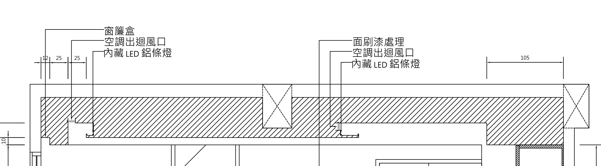
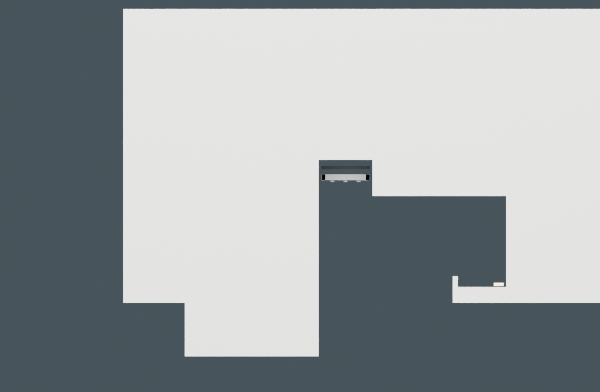
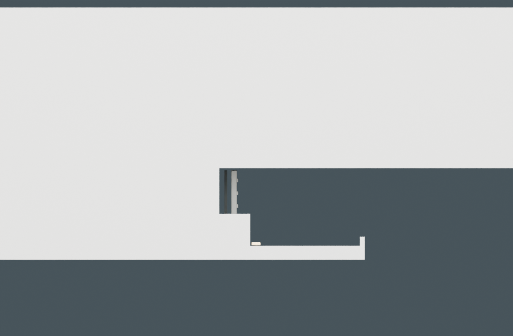

以第 69 頁作為天花剖面與高度依據
原圖左邊是陽台，右邊是原衣櫃側。以下模型剖面使用相同觀看方向，直接呈現同一份 Blender 模型的輪廓。
原施工圖 S3 局部

陽台側：水平風口

中央：垂直風口

| 依據 | 採用內容 |
|---|---|
| 第 69 頁高度 | 250、260 cm；依 20 cm 高差得到 280 cm |
| 原衣櫃側 | 105 cm 低天花範圍保留 |
| 陽台側水平尺寸 | 12＋25＋25 cm，按原圖端點定位 |
| 向量比例量得 | 伸出層板約 25／10 cm；板面約 H263、擋光邊頂約 H265 |